SpeakWise — 강사 가이드북 (Instructor Guide)
대상: 본인 과목에서 SpeakWise로 구술 인터뷰를 운영하고, 학생 응답을 채점·분석하는 강사 및 연구자. 버전 기준: 2026-04-24 시점
master— Class Analytics 섹션, Submission 분석 패널, Concept Map Toulmin 모드 포함.🎬 나레이션 비디오 튜토리얼 (약 3분): instructor-tutorial.mp4 — 코스 생성 → 분석 → 제출물 리뷰 → 컨셉맵까지, 음성 안내와 커서 표시가 포함된 강사 여정 전체 영상 (영어 나레이션).
1. 시작하기 — 랜딩과 로그인
SpeakWise의 진입 페이지는 학생 포털과 강사 워크스페이스를 하나의 화면에서 분기합니다.

순서
- Instructor Workspace 버튼을 클릭합니다.
- 통합 인증 화면이 열립니다. 이메일과 비밀번호를 입력하고 Sign in을 누르세요.
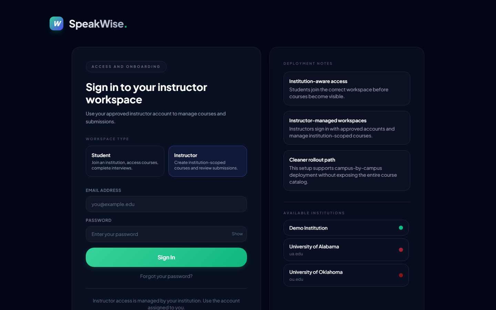
계정이 처음이라면: 왼쪽 상단의 모드 토글을 통해 회원가입 폼으로 전환해 이메일, 역할, 소속 기관을 함께 등록하세요. ADMIN_EMAIL(시스템 상수)에 등록된 이메일로 가입하면 관리자 권한이 자동 부여되어 모든 기관의 모든 코스를 볼 수 있습니다.
로그인 직후, 시스템은 Supabase에서 본인 소속 기관의 코스·제출을 로드합니다. 완료 전에는 "Loading from Supabase…" 플레이스홀더가 잠시 보입니다.
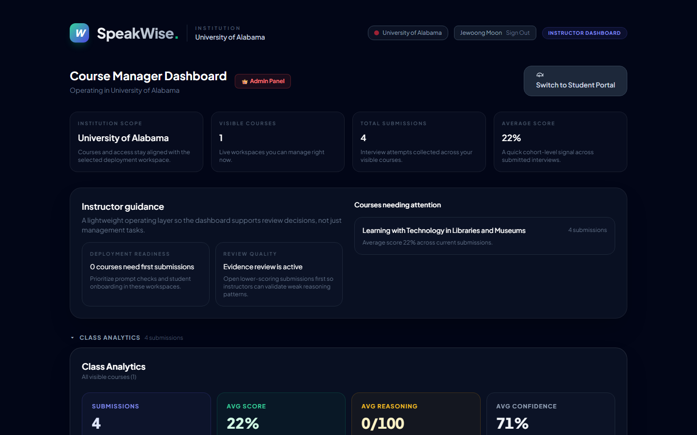
2. 대시보드 구조
로그인이 끝나면 Course Manager Dashboard로 자동 이동합니다. 한 화면에 세 개의 큰 구역이 있습니다:
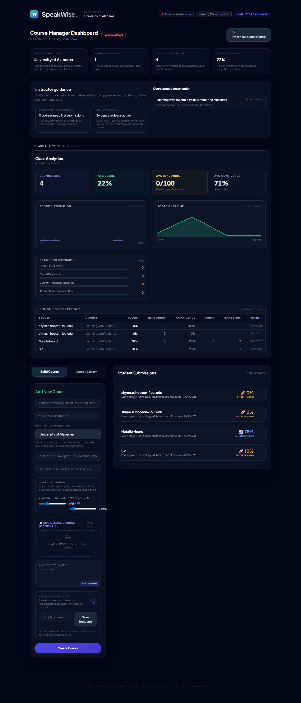
| 구역 | 역할 |
|---|---|
| 상단 헤더 | 기관 선택 상태, 현재 로그인 이메일, 관리자 패널 진입 버튼 (admin 전용). |
| 가운데 — 요약 카드 + 가이드 | 기관 범위, 가시 코스 수, 누적 제출 수, 평균 점수 / Instructor guidance 카드. |
| Class Analytics 섹션 | 클래스 수준의 메트릭·차트·per-student 테이블. 접을 수 있습니다 (▾ 버튼). |
| 하단 — 코스 빌더 + 제출 목록 | 왼쪽은 "Build Course / Course Library" 탭. 오른쪽은 최근 제출 목록. |
관리자 vs 일반 강사: 관리자는 모든 기관·코스·제출을 봅니다. 일반 강사는
ownerEmail이 본인 이메일과 일치하는 코스만 보입니다. 코스에 접근이 안 보인다면 해당 코스의 owner_email을 확인하세요.
3. Class Analytics — 클래스 수준 분석
Class Analytics 섹션은 기본적으로 열려 있습니다. 닫고 싶으면 제목 왼쪽의 ▾ 삼각형을 눌러 토글합니다. 열어두면 5단계의 시각 레이어가 순서대로 보입니다.
3.1 Top-line Metric Cards
네 개의 카드가 나란히 표시됩니다 (왼쪽부터):
| 카드 | 의미 | 해석 힌트 |
|---|---|---|
| Submissions | 가시 코스 전체의 총 제출 수 | 0이면 먼저 학생 초대 / passcode 배포를 확인 |
| Avg Score | AI 점수 평균 (0–100) | 낮으면 rubric이 엄격한지, 학생이 준비가 덜 됐는지 판단 필요 |
| Avg Reasoning | reasoningRubric.overallReasoningScore 평균 |
Toulmin 요소 커버리지 기반 — AI 점수와 독립적으로 해석 |
| Avg Confidence | AI가 자기 평가를 얼마나 확신하는지 (0–100%) | 낮으면 transcript가 너무 짧거나 모호했다는 신호 |
3.2 Score Distribution & Time Series
- Score Distribution — 0–100을 10개 bin으로 나눈 히스토그램. 분포가 한쪽으로 쏠려 있으면 rubric 조정을 고려하세요.
- Score over time — 오래된 제출 → 최신 제출 순서의 스파크라인. 시간이 갈수록 점수가 오르면 학생들이 포맷에 익숙해진 신호.
3.3 Reasoning Dimensions Bar Chart
네 축 — Explicit Justification, Causal Explanation, Counter-Argument Handling, Abstraction/Generalization — 각각 0–5 평균으로 표시. 낮은 축이 전체 개선 타겟입니다.
3.4 Per-Student Breakdown Table
- 컬럼: Student / Course / Score / Reasoning / Confidence / Turns / Barge-ins / When
- 헤더 클릭으로 정렬 — 점수 오름차순으로 정렬하면 하위 10%가 바로 보입니다.
- 행 클릭으로 Submission Detail 모달 열기 — 다음 섹션에서 설명.
연구용 팁: 이 테이블 자체를 copy-paste해서 Excel / R로 붙여 넣을 수 있습니다. 추후 별도 CSV export 기능이 들어올 예정 (Track R).
4. Submission 상세 워크스루
per-student 테이블에서 행을 클릭하거나, 오른쪽 최근 제출 목록의 카드를 클릭하면 Submission Detail 모달이 열립니다. 이 모달은 세로 스크롤이 긴 편이라 섹션별로 설명합니다.
4.1 상단 — 점수 + AI Feedback + Confidence

- 학생 이름, 코스, 제출 시각
- 마스터리 레벨 (이모지 + %)
- AI Feedback — Gemini가 생성한 3–5문장의 종합 피드백
- AI Confidence — AI가 이 평가를 얼마나 확신하는지. Rationale 한 줄도 함께 보입니다. 0.3 미만이면 강사 직접 재평가를 권장.
4.2 Rubric Breakdown Radar
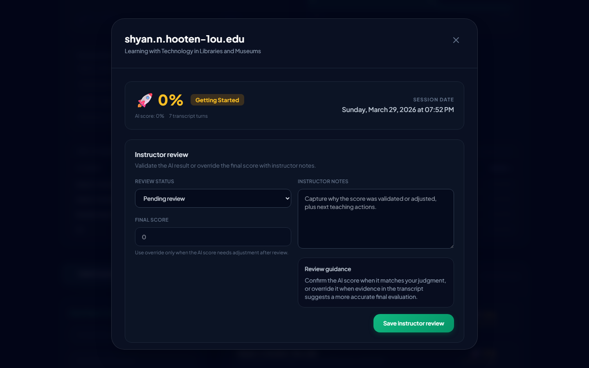
- 왼쪽에 4축 radar: Conceptual / Clarity / Critical / Engagement (각 0–25점)
- 오른쪽에 각 차원의 점수 + 증거 인용 펼침 (▸ 클릭)
- 증거 인용은 AI가 transcript에서 직접 뽑은 구절입니다. 강사는 이걸 보고 AI 판단의 타당성을 즉시 검증할 수 있습니다.
4.3 Reasoning Quality + Session Timing

Reasoning Quality 블록
- 4개 가로 막대: Explicit Justification / Causal Explanation / Counter-Argument Handling / Abstraction (각 0–5)
- 오른쪽 상단에 Overall Reasoning Score (0–100)
- 아래에 raw 카운트: "Justifications: 3, Causal patterns: 2, …" — 언어학적 패턴 탐지 결과.
Session Timing 블록
- 4개 metric card: Turns / Avg Response / Max Delay / Turn-Taking
- 응답 지연 시계열 sparkline — 턴을 거치며 학생이 빨라지는지/느려지는지
- Dialogue metrics: Initiatives, Rephrasing, Avg follow-up chars, Latency σ
Barge-in 이벤트 패널은 바로 그 아래에 표시되는데, 해당 제출이 interruption 이벤트가 있을 때만 렌더됩니다. interpretation 뱃지가 Confidence (초록) / Hasty (노랑) / Correction (파랑) / Unclassified (회색) 중 하나로 표시됩니다.
4.4 Speech capture archive (upstream)
rawTranscriptTurns + failedTranscriptions를 보여주는 블록입니다. 너무 짧거나 실패한 턴을 디버깅할 때 유용합니다. 연구 재현성 관점에서 중요.
4.5 Integrated Analysis Workspace — Concept Map
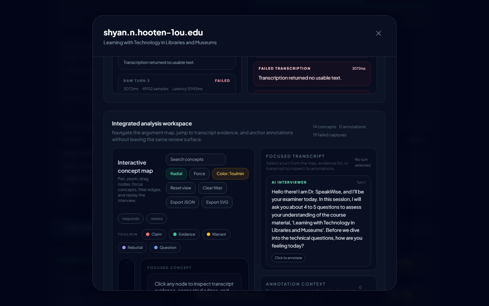
학생 응답의 개념 구조를 시각화한 영역. 다음 섹션에서 상세히 설명합니다.
5. Concept Map 완전 활용법
Submission 상세 중앙부에 있는 Integrated analysis workspace는 강사가 가장 많이 보게 될 도구입니다. 왼쪽에 노드-엣지 그래프, 오른쪽에 transcript + annotation 영역이 나란히 붙어 있습니다.
5.1 기본 조작
| 제스처 | 결과 |
|---|---|
| 배경 드래그 | 전체 캔버스를 pan |
| 휠 스크롤 | 포인터 위치 기준으로 zoom |
| 노드 드래그 | 해당 노드만 수동 배치 (저장됨) |
| 노드 클릭 | 오른쪽 사이드바에 해당 개념의 상세 + transcript 참조 |
| 엣지 클릭 | 해당 관계 유형으로 필터 적용 |
5.2 레이아웃 모드 — Radial vs Force
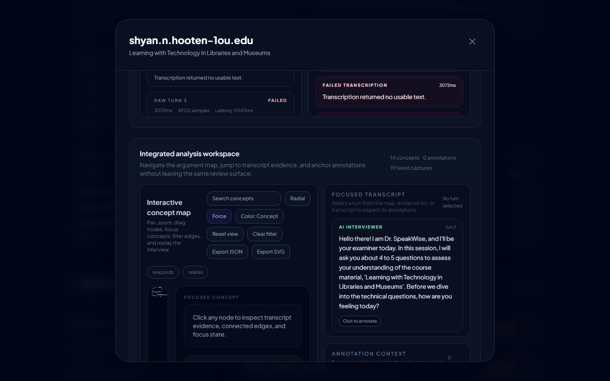
- Radial (기본) — 루트 노드를 중심으로 레벨별 동심원 배치. 구조가 선명.
- Force — d3-force 기반 시뮬레이션. 관계가 복잡하거나 레벨이 불명확한 경우 더 자연스러운 클러스터를 드러냅니다.
5.3 컬러 모드 — Concept vs Toulmin ⭐
Color: Concept / Toulmin 버튼으로 토글.
- Concept 모드 (기본) — THEORY(인디고) / PRINCIPLE(앰버) / DOMAIN(바이올렛) / TOOL(시안) / EXAMPLE(틸) 다섯 계층으로 색 구분. 도메인 지식의 종류를 보여줍니다.
- Toulmin 모드 — 각 노드의 담론 역할(claim/evidence/warrant/rebuttal/question)로 색 구분:
- 🔴 Claim (rose)
- 🟢 Evidence (emerald)
- 🟡 Warrant (amber) — 논리적 교량
- 🟣 Rebuttal (violet) — 반대·대응
- 🔵 Question (blue) — 인터뷰어의 질문
5.4 Toulmin 필터 칩
Toulmin 모드에서만 나타나는 칩 행. 각 칩에 해당 색 점이 찍혀 있어 범례가 곧 필터입니다.
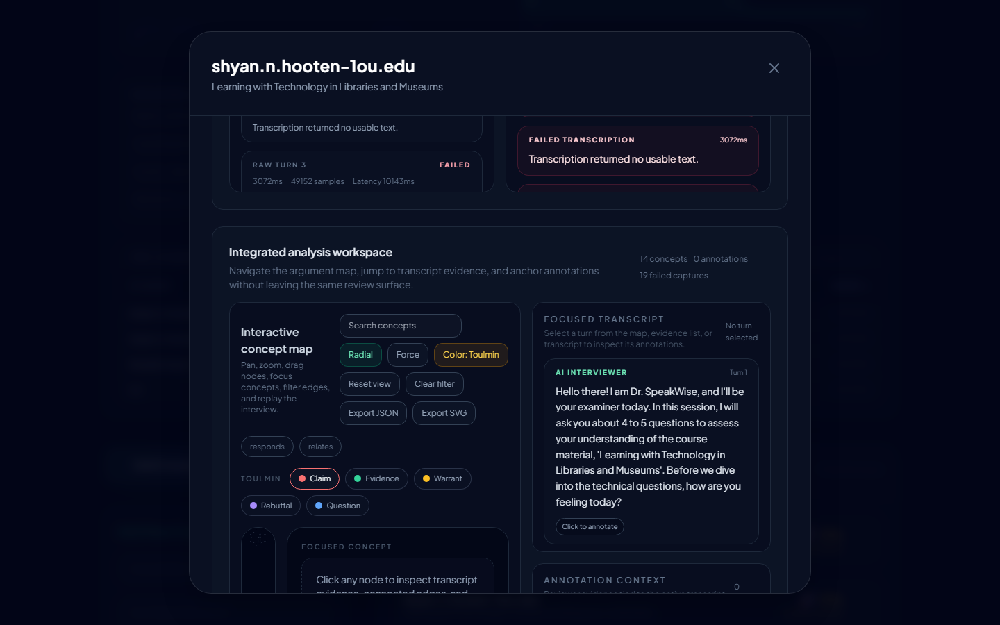
- Claim 칩 클릭 → Claim 역할의 노드만 남고 나머지는 사라짐
- 다시 클릭하면 해제
- "Clear filter" 버튼을 누르면 Toulmin 필터와 관계 필터가 모두 풀림
연구 활용 시나리오
- "이 학생은 Claim은 많은데 Evidence가 적은가?" — Claim만 켜고 센 뒤, Evidence만 켜고 비교
- "Warrant density를 cohort 간 비교" — 여러 Submission 상세를 비교할 때 Warrant만 켠 상태 스크린샷을 나란히
5.5 Replay — Timeline Playback
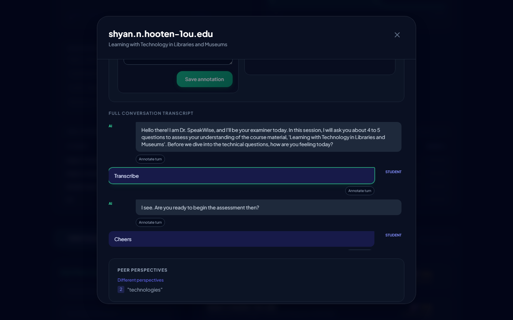
오른쪽 사이드바의 Timeline playback 카드:
- Play / Pause — 턴 단위로 자동 전진 (1.1초 간격 기본)
- Full map — 전체 턴을 한 번에 보여줌 (활성 턴 상태 해제)
- 슬라이더 — 특정 턴으로 드래그 이동
- 턴이 진행될수록 그래프가 자라납니다 — 새로 등장하는 노드는 520ms 동안 scale + fade 애니메이션으로 드러남. 현재 언급되는 노드는 녹색 pulse 효과.
키보드 단축키 (어떤 인풋 필드에도 포커스가 없을 때):
| 키 | 동작 |
|---|---|
← |
이전 턴 |
→ |
다음 턴 |
Home |
첫 턴 |
End |
마지막 턴 |
Space |
재생/정지 토글 (빈 상태에서는 첫 턴부터 자동 재생) |
5.6 검색 + 관계 필터 + 클러스터 접기
상단 툴바의 Search concepts 입력은 노드의 content·type·conceptType을 대소문자 무관하게 검색합니다. 매칭된 노드만 남고 나머지는 흐려집니다.
관계 필터 칩(Defines / Requires / Exemplifies / Enables / Located in)은 엣지 라벨 기준으로 해당 관계만 남깁니다. Toulmin 필터와 독립적이며 중첩 적용됩니다.
Cluster collapse — 레벨 1 노드(허브)에 해당하는 모든 하위 노드를 한 번에 접어서 숨깁니다. 허브가 많아 그래프가 복잡할 때 유용.
6. Instructor Review — 점수 검증·오버라이드

Submission 상세 하단에는 instructor review 영역이 있습니다 (upstream 기능).
- Validated — AI 점수를 그대로 확정
- Override — 본인 판단으로 점수 수정 (0–100, 자유 입력)
- Notes — 내부 코멘트
이 상태 정보는 submission_reviews 테이블에 저장되며 나중에 inter-rater reliability 분석의 원천 데이터가 됩니다.
7. Annotation — 특정 턴에 메모 남기기
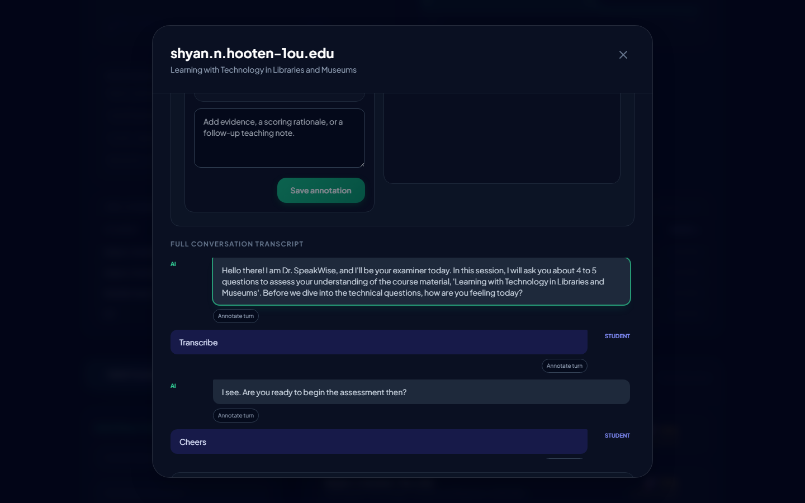
transcript 각 턴 옆의 "Click to annotate" 클릭 → 카테고리 선택 (strength / concern / evidence / follow_up) + 노트 작성 → Save.
카테고리 별 색:
- 🟢 Strength — 잘한 부분
- 🔴 Concern — 우려 지점
- 🔵 Evidence — 특정 주장의 근거로 인용 가능
- 🟡 Follow up — 후속 점검 필요
annotation은 submission_annotations 테이블에 저장되어 다른 강사와 실시간 동기화됩니다 (realtime subscription).
8. 코스 만들기 (왼쪽 패널)
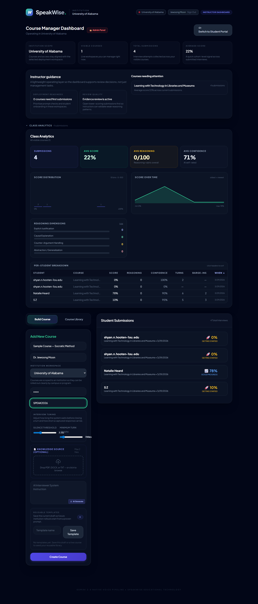
대시보드 하단 왼쪽의 Build Course 탭에서 신규 코스를 생성합니다.
필수 항목:
- Course Name
- Instructor Name
- Instructor PIN (4 digits) — 학생 제출을 볼 때 본인 확인용
- Student Passcode — 학생이 코스에 입장할 때 입력
- Institution — 드롭다운에서 선택
- Silence Threshold / Turn Duration — 음성 턴 분리 감도 (기본 3000ms / 700ms)
- Knowledge Source (선택) — PDF/DOCX/TXT 최대 2개 업로드 → Gemini로 질문 자동 추출 가능
System Prompt (Interviewer 인스트럭션) — 하단에 텍스트박스로 직접 작성하거나 ✨ Generate AI prompt 버튼으로 Gemini에게 맡길 수 있습니다. 좋은 프롬프트가 인터뷰 질 전체를 좌우합니다.
Course Library 탭에서는 이전에 저장한 템플릿을 재사용할 수 있습니다.
9. 기존 코스 관리
대시보드 오른쪽 제출 목록 위에 각 코스 카드가 있습니다.
- View — 코스 상세 (프롬프트 편집, 제출 목록)
- Delete — 코스 삭제 (cascade로 제출도 함께 삭제)
두 동작 모두 Instructor PIN 검증이 걸립니다 (admin 또는 본인이 생성한 코스는 생략 가능).
코스 상세 안에서 System Prompt를 수정하면 이후 진행되는 인터뷰에 즉시 반영됩니다. 이미 제출된 submission은 영향 없음.
10. Admin Panel (관리자 전용)
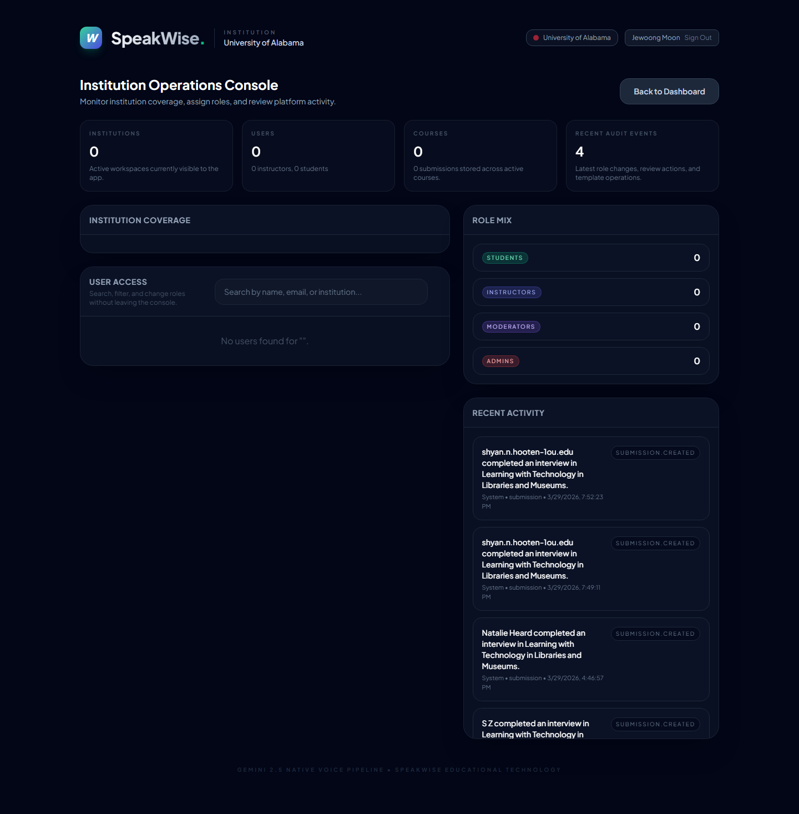
jewoong.moon@gmail.com(ADMIN_EMAIL)로 로그인한 경우 헤더 우상단에 👑 Admin Panel 버튼이 노출됩니다. 여기서:
- Institution Operations Console — 기관 coverage, 역할 mix
- User Access 검색 / 역할 변경
- Recent Activity — P2 마이그레이션으로 설치된 DB 트리거가 submission.created 이벤트를 자동 기록한 실시간 스트림
- 기관 관리 (생성/수정/access code 변경)
현재 한계: app-managed auth 하에서
is_admin_role()헬퍼가 Supabase-Auth JWT를 전제로 동작하기 때문에 일부 카운트(Institutions, Users, Courses)가 0으로 보입니다. P3 세션 토큰 도입 후 이 디스플레이 갭이 닫힙니다.
11. 내보내기
- Export JSON (Concept map 툴바) — 현재 그래프 + 뷰포트 + 접힌 클러스터 상태 전부 JSON
- Export SVG (Concept map 툴바) — 포스터/논문 figure용 벡터 내보내기
- Print report (Submission detail 하단) — 브라우저 인쇄 → PDF 저장. 인쇄 스타일시트가 적용되어 글래스 패널이 흰 종이용으로 변환됨
아직 없는 것 (Track R 예정): 전체 클래스 CSV / 연구용 tidy long format JSON. 논문 작성 시 raw 데이터가 필요하면 우선 Supabase SQL Editor로 직접 추출해 주세요.
12. 알면 좋은 것 — 성능·운영
- Gemini 키 관리: Vercel 환경변수
GEMINI_API_KEY가 Build 환경(Production/Preview/Development 모두)에 체크되어 있어야 student 인터뷰의 음성 파이프라인이 동작합니다. 키 만료 시 AI Studio에서 재발급 후 Vercel 환경변수 갱신 → redeploy. app_users.email보호: 이제 anon 키로는 이메일이 보이지 않습니다. 사용자 목록은list_app_users_for_adminRPC 경유.audit_logs: 제출 생성 시 DB 트리거가 자동 기록. 클라이언트가 보낸 domain event(코스 삭제, 역할 변경 등)는log_audit_eventRPC로 통합됨.- 세션 토큰 인증 (P3): 아직 미도입. 현재는 publishable key가 있으면 RPC를 누구나 호출 가능한 상태. IRB 제출 전에 도입 권장.
부록 — 트러블슈팅
| 증상 | 원인 가능성 | 조치 |
|---|---|---|
| 대시보드가 끝없이 "Loading from Supabase…" | Supabase 프로젝트 일시 정지 (free tier 7일 비활성) | Supabase 대시보드에서 "Restore project" 클릭, 1–2분 대기 |
| 로그인 성공했는데 대시보드가 비어 있음 | 본인 이메일이 admin이 아니고 course.owner_email에도 안 맞음 |
해당 코스 owner_email을 본인 이메일로 변경하거나, 관리자에게 요청 |
| Concept Map이 비어 있고 "No argument data" 표시 | transcript가 너무 짧거나 패턴이 거의 감지 안 됨 | 인터뷰어 프롬프트를 보강해 학생이 claim·evidence를 더 명시적으로 말하도록 유도 |
| rubric radar / reasoning 바가 안 보임 | 해당 submission에 rubricBreakdown / reasoningRubric 필드가 비어 있음 |
R1 rubric_breakdown 백필 스크립트 (playwright/.backfill-rubric.mjs 동일 서버) 실행 |
| Toulmin 칩이 안 보임 | Concept 모드일 때는 숨겨져 있음 | Color: Concept 버튼을 눌러 Color: Toulmin으로 전환 |
이 문서는 playwright/capture.mjs로 자동 생성된 스크린샷과 함께 제공됩니다. 기능이 변경될 때마다 캡처를 다시 실행하면 스크린샷이 갱신됩니다.